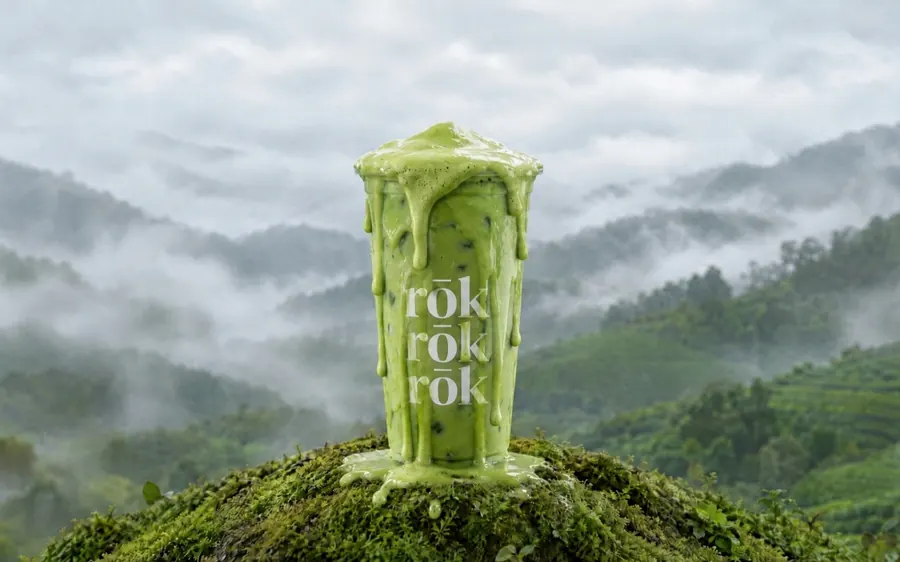
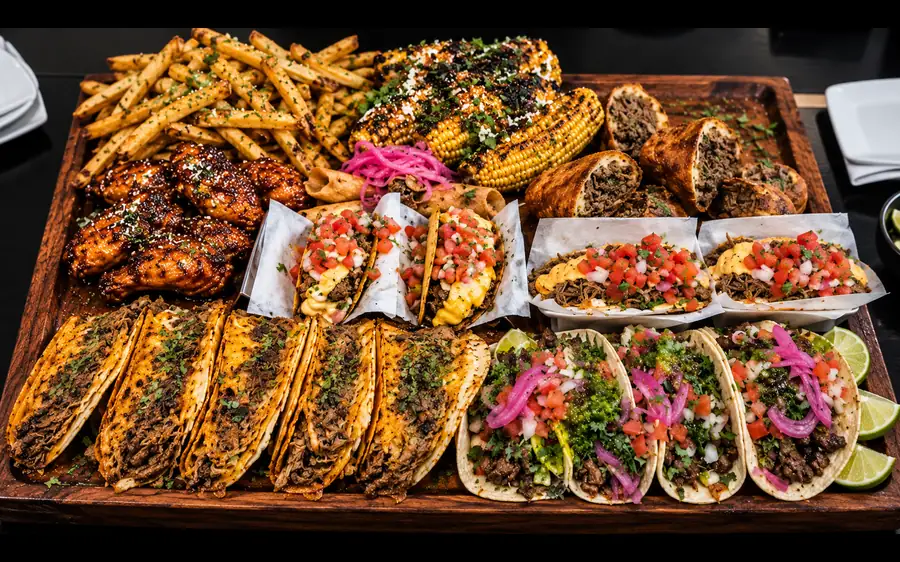
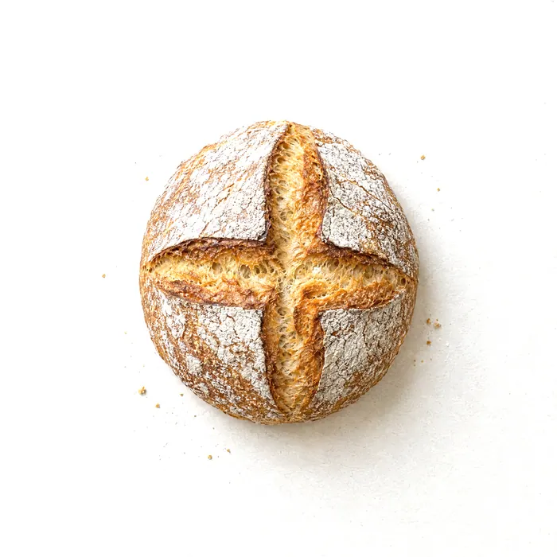
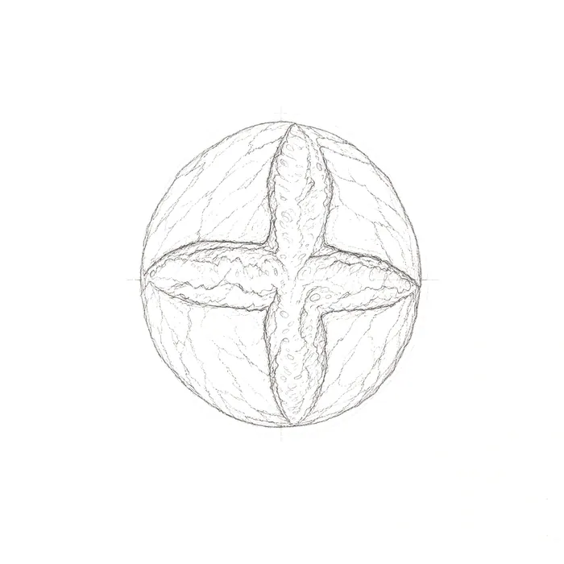

Concept imageLumera Creative. Where design meets innovation.
We design and build the technology the problem calls for.


Concept imageProjects
Everything we've made(06)
- 01rōk coffee and teaFeatured study
- 02Lenny's CasitaFeatured study
- 03BB's BakeryFeatured study
- 04Stagger CoffeeWebsite concept (opens the live site in a new tab)
- 05MotiqWebsite concept (opens the live site in a new tab)
- 06Tirzah's Mexi-Terranean GrillWebsite concept (opens the live site in a new tab)
Six projects from 2026, three of them featured below. Each is an independent concept for a real Los Angeles business, designed and built end to end.
01 / 03
rōk coffee and tea
Starting questionCan the signature drink be the first thing you feel, before you read a word?
- Direction
- One pour, driven by the visitor's scroll. Scroll down and the cup fills until it overflows. Scroll back and it drains.
- Credits
- Storefront photos by rōk. Drink and scene imagery are AI-generated stand-ins, disclosed on the site.
How we built it
- What we built
- Scroll-scrubbed hero film, with a still fallback for reduced motion
- Pinned locations story with a route map drawn from the four real addresses
- Exploded 3D view of the rōk × Fellow travel mug kit, modeled and rendered in Blender, in four colorways
- Tested at 21 viewport sizes, from 360 to 2560 px wide
- Built with
- HTML, CSS, JavaScript, Blender, ffmpeg
02 / 03
Lenny's Casita
Starting questionCan a restaurant site feel like the night out it's selling?
- Spicy Margarita Balagán
- Waterpamelon
- 616 Gimlet
- Carefuleta
- Michelada de Casita
- La Manzana Whiskey Sour
- Direction
- Tell the evening in chapters: a film that moves with the scroll, a tour of plates, and a cocktail list where each drink repaints the page.
- Credits
- Photography and menu content from Lenny's Casita's own published material.
How we built it
- What we built
- Scroll-driven film hero in five scenes
- Six cocktail chapters, each with its own page color
- Live open or closed status from the posted hours
- Custom-styled map with a static fallback, and a full menu page
- Built with
- Vite, GSAP, Lenis, WebGL, MapLibre with OpenFreeMap
03 / 03
BB's Bakery
Starting questionCan a small bakery's site feel handmade, like the bread?

- Direction
- A sketchbook. Each bread begins as a pencil drawing and becomes a photograph as you scroll, guided by a hand-drawn croissant.
- Credits
- All product imagery is AI-generated concept imagery, labeled on the site. Business facts come from its public listing.
How we built it
- What we built
- Pinned menu where each bread draws itself, shades in, turns into a photograph, then erases
- A pencil croissant character with a scroll-choreographed story
- An after-hours visit chapter lit by a WebGL light field
- Prerendered React build that still works without JavaScript
- Built with
- React, TypeScript, Vite, GSAP, Lenis, WebGL
Steps, every project
- 01
Understand what's in the way.
Before anything is designed, we find the actual obstacle: what people can't find, can't feel, or can't do.
- 02
Find where technology helps.
Sometimes it's a website. Sometimes it's a tool, an automation, or less software than you expected.
- 03
Design the system that fits.
Structure, interaction and look are designed together, for the people who will use it.
- 04
Build it, and test it properly.
Real devices, real screen sizes, keyboards and reduced motion. Then we measure and fix.
Capabilities
01
Interactive web
- Websites
- Interactive experiences
- Website restructuring
- Digital product interfaces
02
Applied AI and automation
- AI assistants
- AI agents
- Workflow automation
- Process improvements
No published examples yet.
03
Custom systems
- Internal tools
- Dashboards
- Booking and ordering systems
- Integrations and purpose-built software
No published examples yet.
What's getting in the way?
Tell us what isn't working.